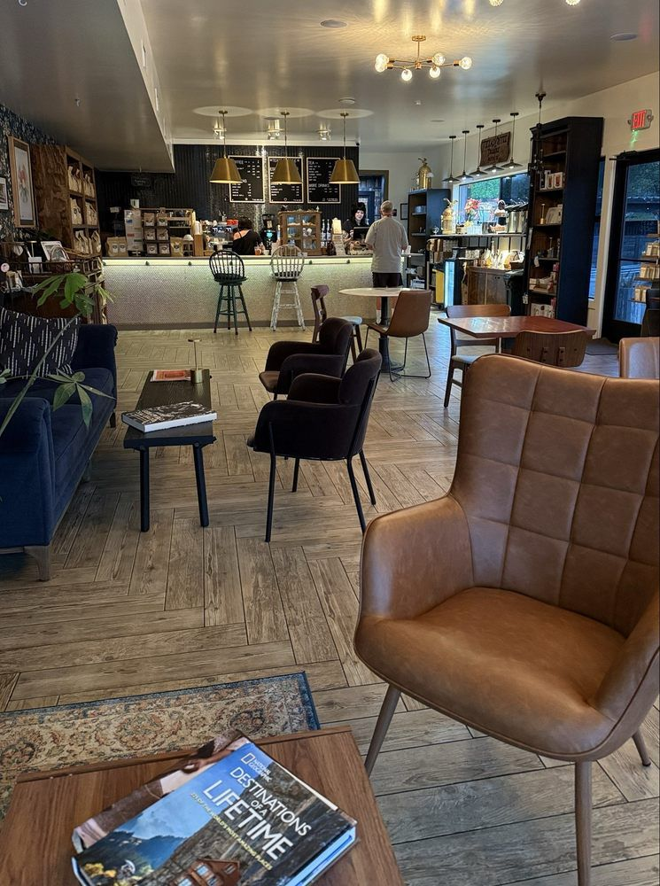

Hours below
The Cafe & Retail Shop
Morning coffee, espresso drinks, pastries, fresh-roasted beans, loose-leaf tea and Coffee Traders merch. Leather couches inside, a big patio outside, and a walk-up window. Pop in or stay a while.
3223 E 7th St, Austin, TX 78702| Monday | 7am – 4pm |
|---|---|
| Tuesday | 7am – 4pm |
| Wednesday | 7am – 4pm |
| Thursday | 7am – 4pm |
| Friday | 7am – 4pm |
| Saturday | 9am – 4pm |
| Sunday | Closed |